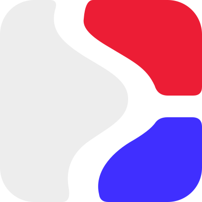

<!doctype html><html lang="ru"><meta charset="utf-8"><title>Офферли — Дело найдёт.</title><style>
@font-face{font-family:Manrope;src:url(assets/Manrope-Regular.ttf)}@font-face{font-family:Manrope;src:url(assets/Manrope-Bold.ttf);font-weight:800}@font-face{font-family:Mono;src:url(assets/JetBrainsMono-Regular.ttf)}
*{box-sizing:border-box}html,body{margin:0;width:1920px;height:1080px;overflow:hidden;background:#1b1c21;font-family:Manrope,sans-serif}#stage{position:absolute;inset:0;color:#fff;overflow:hidden}.scene{position:absolute;inset:0;overflow:hidden;background:#1b1c21;color:white}.scene.light{background:#f3f1f8;color:#1b1c21}.grid{position:absolute;inset:0;opacity:.035;background-image:linear-gradient(currentColor 1px,transparent 1px),linear-gradient(90deg,currentColor 1px,transparent 1px);background-size:88px 88px;mask-image:linear-gradient(transparent,#000)}.orb{position:absolute;right:-200px;top:-350px;width:1000px;height:1000px;border-radius:50%;background:radial-gradient(circle,#6954ff50,transparent 65%)}.brand{position:absolute;top:58px;left:88px;display:flex;align-items:center;gap:16px;font-size:31px;font-weight:800;letter-spacing:-1px}.brand img{width:46px;height:46px}.folio{position:absolute;top:72px;right:88px;font:15px Mono;letter-spacing:2px;opacity:.5}.copy{position:absolute;left:88px;top:303px;width:560px}.kicker{font:17px Mono;letter-spacing:2.4px;color:#a99fff;margin-bottom:28px}.light .kicker{color:#402fff}h1{margin:0 0 28px;font-size:78px;font-weight:800;line-height:1.07;letter-spacing:-3.6px}.line{display:block;overflow:hidden;padding:5px 0;margin:-5px 0}.line>span{display:block;transform-origin:left bottom}.accent{color:#a99fff}.light .accent{color:#402fff}.copy p{font-size:25px;line-height:1.5;color:#bcb7ca;max-width:500px;margin:0}.light .copy p{color:#746d82}.pill{display:inline-flex;gap:10px;font:15px Mono;border:1px solid #8e7dff60;padding:13px 17px;border-radius:24px;color:#d8d0ff;margin-top:28px}.light .pill{color:#402fff;background:#eae5ff}.screen{position:absolute;left:684px;top:183px;width:1152px;height:768px;background:#fff;border:1px solid #ffffff26;border-radius:18px;overflow:hidden;box-shadow:0 50px 95px #0004;transform-origin:55% 50%;will-change:transform}.media{width:100%;height:100%;object-fit:cover;display:block;will-change:transform}.screen:after{content:'';position:absolute;inset:0;border:1px solid #fff2;border-radius:18px;pointer-events:none}.screen-top{position:absolute;top:151px;left:702px;font:13px Mono;letter-spacing:1.5px;opacity:.45}.steps{position:absolute;left:88px;bottom:84px;display:flex;gap:10px;font:13px Mono;letter-spacing:.5px;color:#8e879f}.steps span{padding:9px 13px;border:1px solid #91879b30;border-radius:18px}.steps .selected{border-color:#6856ff;color:#a99fff}.light .steps .selected{color:#402fff}.footline{position:absolute;left:88px;right:88px;bottom:52px;height:2px;background:#8c7fa726}.progress{height:100%;background:#745bff;width:0}.hero .copy{top:321px;left:130px;width:1300px}.hero h1{font-size:139px;letter-spacing:-7px;line-height:1.02;margin-bottom:35px}.hero .copy p{font-size:29px;max-width:800px}.hero-mark{position:absolute;width:340px;height:340px;left:1440px;top:330px;filter:drop-shadow(0 40px 50px #0003)}.dash{position:absolute;right:192px;bottom:150px;width:124px;height:8px;background:#ec1d35;border-radius:6px;transform:rotate(-30deg)}.hero .kicker{font-size:18px}.end .copy{left:0;top:422px;width:1920px;text-align:center}.end h1{font-size:128px;letter-spacing:-6px}.end .hero-mark{left:876px;top:170px;width:168px;height:168px}.end .copy p{max-width:none}.end .brand{display:none}.url{display:inline-block;font:28px Mono;border:1px solid #716189;padding:16px 32px;border-radius:40px;margin-top:27px;color:#fff}.end .kicker{margin-bottom:20px}.focus .screen{left:560px;width:1296px;height:864px;top:150px}.focus .copy{width:435px;top:337px}.focus h1{font-size:68px}.focus .screen-top{left:579px;top:121px}.focus .steps{bottom:83px}.focus .copy p{max-width:400px}.number{position:absolute;left:84px;top:163px;font:120px Mono;line-height:1;color:#8c7fa710;letter-spacing:-9px}.wipe{position:absolute;inset:0;background:#402fff;z-index:100;pointer-events:none;transform:translateX(-110%)}.spark{position:absolute;right:120px;top:155px;width:8px;height:8px;background:#ec1d35;border-radius:50%}.end .steps{display:none}
</style><div id="stage"></div><div class="wipe"></div><script>
const scenes=[
 {start:0,end:4,type:'dark hero',tag:'ДЛЯ IT-СПЕЦИАЛИСТОВ И КОМАНД',lines:['Навыки говорят.','Дело найдёт.'],text:'Офферли. Ваш опыт становится возможностью.',hero:true,accent:1},
 {start:4,end:10,type:'dark',tag:'01 / НАЧНИТЕ ЗНАКОМСТВО',lines:['Ваш следующий','шаг — здесь.'],text:'Создайте аккаунт. Выберите свою сторону: кандидат или работодатель.',clip:'registration.mp4',pill:'Один аккаунт · два рабочих пространства',accent:1,focus:[40,65],zoom:1.04},
 {start:10,end:15,type:'light',tag:'02 / РАССКАЖИТЕ О СЕБЕ',lines:['Опыт. Навыки.','Ваши условия.'],text:'Профиль, резюме, технологии и пожелания к работе.',clip:'profile.mp4',pill:'Зарплата · формат · локация',accent:1,focus:[72,45],zoom:1.09},
 {start:15,end:20,type:'dark',tag:'03 / СМОТРИТЕ ВОЗМОЖНОСТИ',lines:['Работа ближе','к тому, что','важно вам.'],text:'Изучайте вакансии и условия. Выбирайте свой следующий шаг.',clip:'jobs.mp4',accent:2,focus:[65,62],zoom:1.12},
 {start:20,end:31,type:'light focus',tag:'04 / ПОКАЖИТЕ СЕБЯ В ДЕЛЕ',lines:['Не только','слова.','Решения.'],text:'Изучите ситуацию. Выберите ответ, составьте план и сохраните решение.',clip:'assessment.mp4',pill:'Обычное прохождение проверки',accent:2,focus:[56,66],zoom:1.06},
 {start:31,end:36,type:'dark',tag:'05 / РАБОТОДАТЕЛЯМ',lines:['Ваша команда','начинается','с людей.'],text:'Находите специалистов по навыкам, категории и условиям.',clip:'candidates.mp4',accent:2,focus:[59,50],zoom:1.08},
 {start:36,end:41,type:'light focus',tag:'06 / ВЫБИРАЙТЕ ОСОЗНАННО',lines:['Сравните.','Увидьте','разницу.'],text:'Компетенции, ожидания и опыт — рядом, в одном сравнении.',img:'compare-v2.png',accent:2,focus:[54,44],zoom:1.06},
 {start:41,end:47,type:'dark',tag:'07 / ПРИГЛАСИТЕ В КОМАНДУ',lines:['Сначала —','ясные','условия.'],text:'Задачи, зарплата и формат. Контакты открываются после согласия.',clip:'invitation.mp4',accent:2,focus:[53,52],zoom:1.1},
 {start:47,end:55,type:'light',tag:'08 / НАЧНИТЕ ДИАЛОГ',lines:['Познакомьтесь.','Обсудите.','Договоритесь.'],text:'Переписка, задачи и следующий шаг — в одном рабочем пространстве.',clip:'chat.mp4',accent:2,focus:[68,66],zoom:1.07},
 {start:55,end:60,type:'dark hero end',tag:'ОФФЕРЛИ',lines:['Дело найдёт.'],text:'Навыки. Люди. Ваше дело.',hero:true,final:true}
];
const labels=['Профиль','Навыки','Возможности','Команда','Диалог'];
const stage=document.querySelector('#stage');
scenes.forEach((s,i)=>{let el=document.createElement('section');el.className='scene '+s.type;el.style.zIndex=i;el.innerHTML=`<div class="grid"></div><div class="orb"></div><div class="brand">Офферли</div><div class="folio">ОФФЕРЛИ / ${String(i+1).padStart(2,'0')}</div><div class="number">${String(i).padStart(2,'0')}</div><div class="copy"><div class="kicker">${s.tag}</div><h1>${s.lines.map((line,j)=>`<span class="line"><span class="${j===s.accent?'accent':''}">${line}</span></span>`).join('')}</h1><p>${s.text}</p>${s.pill?`<div class="pill">${s.pill}</div>`:''}${s.final?'<div class="url">opherly.ru →</div>':''}</div>${s.hero?'<div class="dash"></div>':''}${s.clip||s.img?`<div class="screen-top">opherly.ru / РАБОЧЕЕ ПРОСТРАНСТВО</div><div class="screen">${s.clip?`<video class="media" muted preload="auto" src="assets/${s.clip}"></video>`:``}</div>`:''}<div class="steps">${labels.map((l,j)=>`<span class="${j===Math.min(4,Math.floor(i/2))?'selected':''}">${l}</span>`).join('')}</div><div class="spark"></div><div class="footline"><div class="progress"></div></div>`;stage.append(el);s.el=el;});
const clamp=x=>Math.min(1,Math.max(0,x)),ease=x=>1-Math.pow(1-clamp(x),4),smooth=x=>{x=clamp(x);return x*x*(3-2*x)};
window.ready=Promise.all([document.fonts.ready,...[...document.images].map(i=>i.decode().catch(()=>{})),...[...document.querySelectorAll('video')].map(v=>new Promise((r,j)=>{if(v.readyState>=2)r();else{v.addEventListener('loadeddata',r,{once:true});v.addEventListener('error',j,{once:true})}}))]);
window.setTime=async function(t){
 for(const s of scenes){const u=t-s.start,d=s.end-s.start,active=u>=-.35&&u<d+.5;s.el.style.display=active?'block':'none';if(!active)continue;
 const incoming=ease((u+.35)/.7),outgoing=smooth((u-d+.15)/.6),read=ease(u/.7);
 s.el.style.opacity=incoming*(1-outgoing);s.el.style.clipPath=`inset(0 0 0 ${(1-incoming)*100}%)`;
 const copy=s.el.querySelector('.copy');copy.style.transform=`translateX(${(1-read)*-36-outgoing*60}px)`;
 s.el.querySelectorAll('.line>span').forEach((line,j)=>{const a=ease((u-.03-j*.09)/.7);line.style.transform=`translateY(${(1-a)*108}%) rotate(${(1-a)*2.5}deg)`;line.style.opacity=a;});
 for(const [selector,delay]of [['.kicker',0],['.copy p',.3],['.pill',.42],['.url',.45]]){const e=s.el.querySelector(selector);if(e){const a=ease((u-delay)/.6);e.style.opacity=a;e.style.transform=`translateY(${(1-a)*18}px)`;}}
 const screen=s.el.querySelector('.screen');if(screen){const a=ease((u+.1)/1),camera=smooth((u-1)/Math.max(1,d-2));screen.style.transform=`perspective(2400px) translateX(${(1-a)*150-outgoing*90}px) translateY(${(1-a)*38}px) rotateY(${(1-a)*-7}deg) rotateZ(${(1-a)*1.4}deg) scale(${.94+.06*a+outgoing*.08})`;const media=screen.querySelector('.media');media.style.transformOrigin=`${s.focus[0]}% ${s.focus[1]}%`;media.style.transform=`scale(${1+(s.zoom-1)*camera})`;}
 const mark=s.el.querySelector('.hero-mark');if(mark)mark.style.transform=`translateY(${(1-read)*75+Math.sin(u*.7)*5}px) rotate(${(1-read)*-18}deg) scale(${.75+.25*read})`;
 s.el.querySelector('.orb').style.transform=`translate(${Math.sin(t*.2)*90}px,${Math.cos(t*.24)*65}px)`;s.el.querySelector('.progress').style.width=(t/60*100)+'%';
 const video=s.el.querySelector('video');if(video){const time=Math.max(0,Math.min(video.duration-.04,u*(video.duration/d)));if(Math.abs(video.currentTime-time)>.012)await new Promise(r=>{video.addEventListener('seeked',r,{once:true});video.currentTime=time;});}
 }
 const cut=scenes.slice(1).map(s=>s.start).find(at=>t>=at-.18&&t<=at+.22),wipe=document.querySelector('.wipe');if(cut!==undefined){const a=(t-cut+.18)/.4;wipe.style.transform=`translateX(${-110+a*220}%)`;wipe.style.clipPath='polygon(0 0,12% 0,24% 100%,12% 100%)';wipe.style.opacity='.78';}else wipe.style.opacity='0';
};window.ready.then(()=>window.setTime(2));
</script></html>
